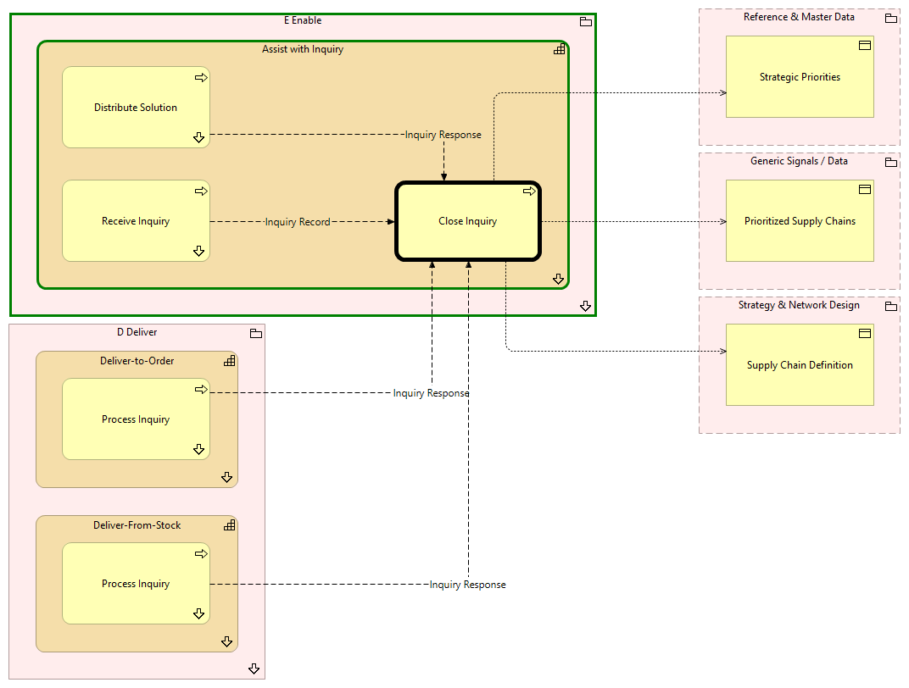

Close Inquiry - Context
(
)

generated_by
build_archi_xml.py::gen_proc_node_context_view
generator_path
pedro/capabilities/build_archi_xml_assign/build_archi_xml_assign.py
run_at
2026-10-10T17:56:46
view_type
process_context
E Enable
Assist with Inquiry
Receive Inquiry
Receive Inquiry - Context
Distribute Solution
Distribute Solution - Context
Close Inquiry
Assist with Inquiry - Processes
E Enable - Processes
D Deliver
Deliver-From-Stock
Process Inquiry
Process Inquiry - Context
Deliver-From-Stock - Processes
Deliver-to-Order
Process Inquiry
Process Inquiry - Context
Deliver-to-Order - Processes
D Deliver - Processes
Reference & Master Data
Strategic Priorities
Generic Signals / Data
Prioritized Supply Chains
Strategy & Network Design
Supply Chain Definition
Inquiry Record
Receive Inquiry
Close Inquiry
Inquiry Response
Distribute Solution
Close Inquiry
Close Inquiry
Strategic Priorities
Close Inquiry
Prioritized Supply Chains
Close Inquiry
Supply Chain Definition
Inquiry Response
Process Inquiry
Close Inquiry
Inquiry Response
Process Inquiry
Close Inquiry